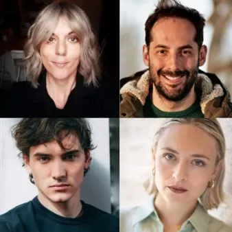

mar 1 dic · dalle 21:00
Festil - Almeno
1 dicembre 21 Teatro San Giorgio Udine Almeno nasce dalla collaborazione con Francesca Coin. Dalle nostre chiacchierate, dalla nostra amicizia e dal desiderio di scrivere assieme. Io e Francesca abbiamo una fissazione in comune: il mondo del lavoro. Nel panorama culturale…
 Indicazioni
Indicazioni
- Costi e prenotazioni
- Costo non indicato · Prenotazione non indicata
- Programma
- Programma da verificare. Apri la fonte ufficiale per orari e possibili aggiornamenti.
- In caso di maltempo
- Nessuna indicazione specifica pubblicata.
- Note
- Acquisito automaticamente dalla fonte.
L’EVENTO
Descrizione completa
Almeno nasce dalla collaborazione con Francesca Coin. Dalle nostre chiacchierate, dalla nostra amicizia e dal desiderio di scrivere assieme. Io e Francesca abbiamo una fissazione in comune: il mondo del lavoro. Nel panorama culturale italiano di lavoro si parla poco e male, spesso in maniera edulcorata, semplificata e retorica. Almeno è un testo nel quale proviamo raccontare il mondo del lavoro senza retorica e con una certa spietatezza. Il testo prende spunto da vicende reali: vissute, ascoltate, in qualche modo incrociate. Ci sono due racconti che vanno in parallelo, rispecchiandosi l’uno nell’altro: una voce femminile racconta in prima persona, mentre una voce maschile riporta una vicenda accaduta a qualcun altro. Le storie di lavoro che raccontiamo sono decisamente comuni e frequenti, ma proprio il fatto che non abbiano nulla di eccezionale le rende interessanti ai nostri occhi. Ci interessava puntare il nostro sguardo proprio là dove apparentemente non c’è nulla da scoprire. Autori Francesca Coin , sociologa, si occupa di lavoro e diseguaglianza sociale.
Sino al 2022 ha lavorato come Professoressa Associata nel Dipartimento di Sociologia dell'Università di Lancaster, nel Regno Unito. Ora insegna all’Università di Parma. È direttrice della collana di libri sul lavoro “Infedeli” per la casa editrice Derive Approdi, co-direttrice, insieme a Sara Farris, della collana “Feminist” per Edizioni Alegre. Il suo ultimo libro, pubblicato da Einaudi, “Le grandi dimissioni. Il nuovo rifiuto del lavoro e il tempo di riprenderci la vita” (2023), ha vinto il Premio Alessandro Leogrande (2024) e il Premio Biella Letteratura e Industria (2024). Scrive per il Manifesto e per Internazionale. Francesco Alberici è regista, drammaturgo e attore.
Lavora sia da solo che con la propria compagnia Frigoproduzioni. Ha vinto due volte il premio Ubu: nel 2021 come miglior attore e nel 2024 per la miglior drammaturgia con Bidibibodibiboo . Ha collaborato, come autore e attore, con molti importanti artisti del panorama teatrale italiano, tra i quali Daria Deflorian e Antonio Tagliarini, Babilonia Teatri, Pier Lorenzo Pisano. Assieme a Enrico Baraldi (Kepler 452) ha scritto lo spettacolo Non tre sorelle , vincitore del Premio ANCT 2021. Accanto all’attività teatrale, ha curato con Silvia Gussoni la raccolta di scritti di Milo Rau Realismo Globale . di Francesco Alberici e Francesca Coin
con Sebastian Luque Herrera , Margherita Varricchio
lettura scenica a cura di Tommaso Tuzzoli
produzione Tinaos
Biglietto unico 3.00 €
IL PROGRAMMA
Programma e orari
Appuntamenti raccolti dalle fonti elencate. Dove manca un orario, non è ancora disponibile in questa scheda.
Programma pubblicato
- Dal 2026-12-01 al 2026-12-01
INFORMAZIONI UTILI
Prima di partire
- Controllare la fonte prima di partire.
ORGANIZZAZIONE